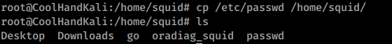
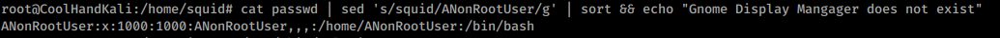

3.3.5.1 Exercises
☐ Using /etc/passwd, extract the user and home directory fields for all users on your Kali machine for which the shell is set to /bin/false. Make sure you use a Bash one-liner to print the output to the screen. The output should look similar to Listing 53 below:

☐ Copy the /etc/passwd file to your home directory (/home/kali).

☐ Use cat in a one-liner to print the output of the /kali/passwd and replace all instances of the “Gnome Display Manager” string with “GDM”
